pt cm
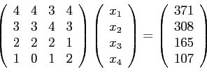
Posons
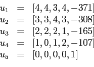
On obtient successivement, à 10 chiffres significatifs :
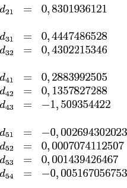
d'où les vecteurs
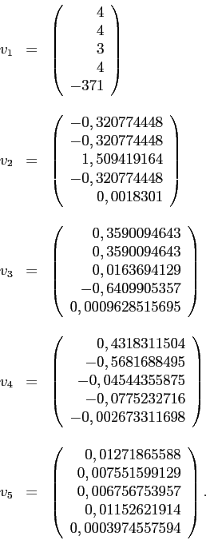
En divisant le vecteur
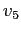
par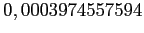
, on a la solution
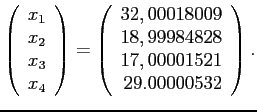
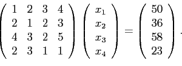
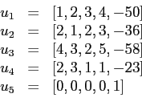
On obtient successivement, à 10 chiffres significatifs :
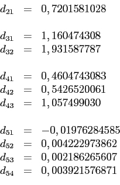
d'où les vecteurs
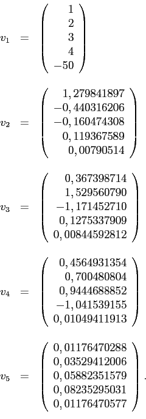
En divisant le vecteur par
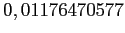
, on a la solution
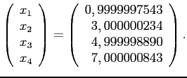
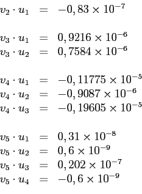
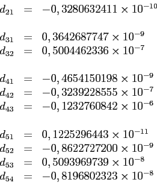
d'où les vecteurs
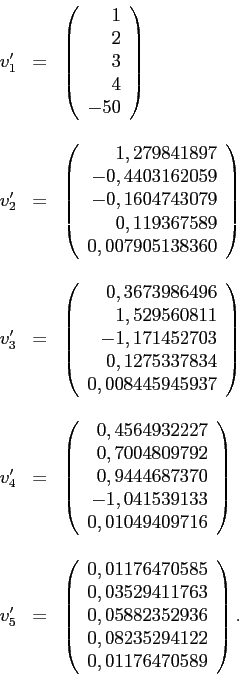
En divisant le vecteur
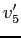
par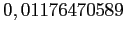
, on a la solution
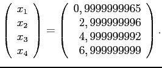
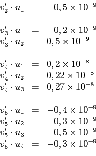
ce qui est plus précis qu'à la partie b).
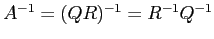
. Or,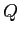
étant orthogonale, on a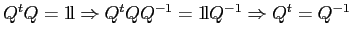
. Ainsi,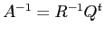
.Pour déterminer
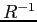
, si on tire profit de la structure triangulaire supérieure, on a besoin de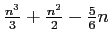
opérations. Pour effectuer le produit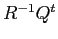
, on ne transpose pas réellement la matrice , mais on va exploiter la structure triangulaire de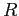
pour faire le produit . Cela donne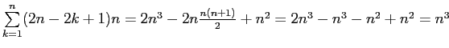
opérations.En tout, on a donc
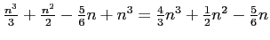
opérations.
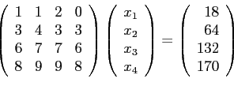
On obtient, à 10 chiffres significatifs, les matrices
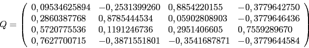
et
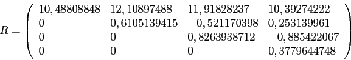
et en effectuant une phase ascendante de résolution sur le système
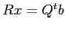
, on obtient la solution
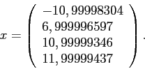
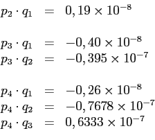
Comme on travaille à 10 chiffres significatifs, les vecteurs
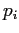
et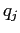
sont très près d'être vraiment orthogonaux. On ne peut donc pas espérer une réelle amélioration à la partie b).
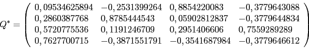
et
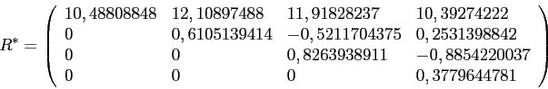
et en effectuant une phase ascendante de résolution sur le système
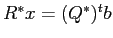
, on obtient la solution
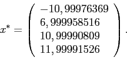
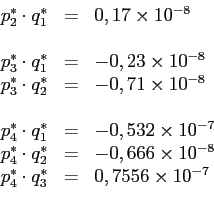
Les vecteurs ne sont donc pas significativement plus orthogonaux qu'à la partie a), ce qui confirme notre intuition.